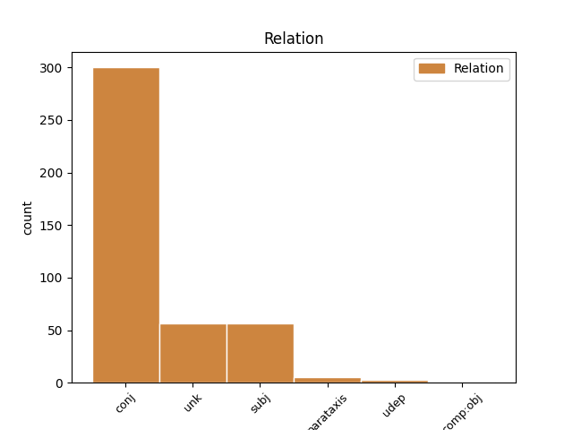
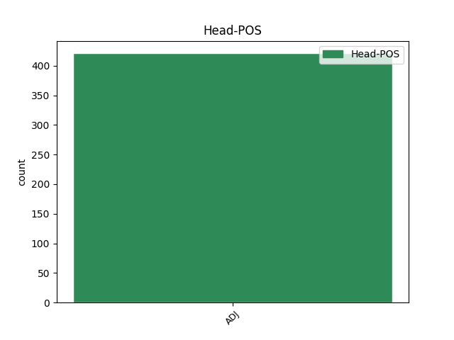
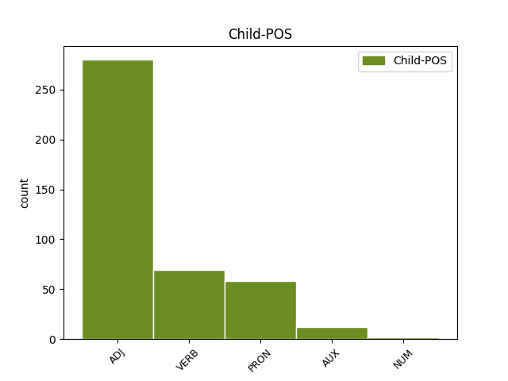

Distribution of features within this leaf



Agreement Rules sorted by frequency.
- When the dependent token is the conjunct(conj) of the head token, and the head token is ADJ and the dependent token is ADJ.
1 חוטף _ _ _ _ 0 _ _ _
2 ו _ _ _ _ 0 _ _ _
3 קולע _ _ _ _ 0 _ _ _
4 ו _ _ _ _ 0 _ _ _
5 נע _ _ _ _ 0 _ _ _
6 ימינה _ _ _ _ 0 _ _ _
7 ו _ _ _ _ 0 _ _ _
8 שמאלה _ _ _ _ 0 _ _ _
9 , _ _ _ _ 0 _ _ _
10 הצידה _ _ _ _ 0 _ _ _
11 ו _ _ _ _ 0 _ _ _
12 אחורה _ _ _ _ 0 _ _ _
13 ו _ _ _ _ 0 _ _ _
14 בסיבוב _ _ _ _ 0 _ _ _
15 , _ _ _ _ 0 _ _ _
16 גמיש _ _ _ _ 0 _ _ _
17 ו _ _ _ _ 0 _ _ _
18 זריז זריז ADJ ADJ Gender=Masc|Number=Sing 0 _ _ _
19 ו _ _ _ _ 0 _ _ _
20 שאפתן שאפתן ADJ ADJ Gender=Masc|Number=Sing 18 conj _ _
21 כמו _ _ _ _ 0 _ _ _
22 ב _ _ _ _ 0 _ _ _
23 ה_ _ _ _ _ 0 _ _ _
24 ימים _ _ _ _ 0 _ _ _
25 ה _ _ _ _ 0 _ _ _
26 בלתי _ _ _ _ 0 _ _ _
27 נשכחים _ _ _ _ 0 _ _ _
28 ה _ _ _ _ 0 _ _ _
29 הם _ _ _ _ 0 _ _ _
30 . _ _ _ _ 0 _ _ _
1 שלושה _ _ _ _ 0 _ _ _
2 שחקני _ _ _ _ 0 _ _ _
3 מפתח _ _ _ _ 0 _ _ _
4 של _ _ _ _ 0 _ _ _
5 נבחרת _ _ _ _ 0 _ _ _
6 ה _ _ _ _ 0 _ _ _
7 נערים _ _ _ _ 0 _ _ _
8 פצועים פצוע ADJ ADJ Gender=Masc|Number=Plur 0 _ _ _
9 ו _ _ _ _ 0 _ _ _
10 זה _ _ _ _ 0 _ _ _
11 כמובן _ _ _ _ 0 _ _ _
12 מטריד הטריד VERB VERB Gender=Masc|HebBinyan=HIFIL|Number=Sing|Person=1,2,3|VerbForm=Part|Voice=Act 8 conj _ _
13 את _ _ _ _ 0 _ _ _
14 ה _ _ _ _ 0 _ _ _
15 מאמן _ _ _ _ 0 _ _ _
16 גדעון _ _ _ _ 0 _ _ _
17 כהן _ _ _ _ 0 _ _ _
18 , _ _ _ _ 0 _ _ _
19 לפני _ _ _ _ 0 _ _ _
20 ה _ _ _ _ 0 _ _ _
21 משחק _ _ _ _ 0 _ _ _
22 עם _ _ _ _ 0 _ _ _
23 הונגריה _ _ _ _ 0 _ _ _
24 ב _ _ _ _ 0 _ _ _
25 קדם _ _ _ _ 0 _ _ _
26 אליפות _ _ _ _ 0 _ _ _
27 אירופה _ _ _ _ 0 _ _ _
28 . _ _ _ _ 0 _ _ _
1 כרס_ _ _ _ _ 0 _ _ _
2 _של_ _ _ _ _ 0 _ _ _
3 _הם _ _ _ _ 0 _ _ _
4 ה _ _ _ _ 0 _ _ _
5 סגלגלות _ _ _ _ 0 _ _ _
6 ו _ _ _ _ 0 _ _ _
7 רגל_ _ _ _ _ 0 _ _ _
8 _של_ _ _ _ _ 0 _ _ _
9 _הם _ _ _ _ 0 _ _ _
10 ה _ _ _ _ 0 _ _ _
11 דקות _ _ _ _ 0 _ _ _
12 מעידים _ _ _ _ 0 _ _ _
13 על _ _ _ _ 0 _ _ _
14 ה _ _ _ _ 0 _ _ _
15 חיים _ _ _ _ 0 _ _ _
16 ה _ _ _ _ 0 _ _ _
17 טובים _ _ _ _ 0 _ _ _
18 ש _ _ _ _ 0 _ _ _
19 היו _ _ _ _ 0 _ _ _
20 ל_ _ _ _ _ 0 _ _ _
21 _הם _ _ _ _ 0 _ _ _
22 ב _ _ _ _ 0 _ _ _
23 ה_ _ _ _ _ 0 _ _ _
24 אמירות _ _ _ _ 0 _ _ _
25 ה _ _ _ _ 0 _ _ _
26 עשירה _ _ _ _ 0 _ _ _
27 לפני _ _ _ _ 0 _ _ _
28 ה _ _ _ _ 0 _ _ _
29 פלישה _ _ _ _ 0 _ _ _
30 ה _ _ _ _ 0 _ _ _
31 עיראקית _ _ _ _ 0 _ _ _
32 , _ _ _ _ 0 _ _ _
33 אך _ _ _ _ 0 _ _ _
34 גם _ _ _ _ 0 _ _ _
35 על _ _ _ _ 0 _ _ _
36 ה _ _ _ _ 0 _ _ _
37 עובדה _ _ _ _ 0 _ _ _
38 ש _ _ _ _ 0 _ _ _
39 הם הוא PRON PRON Gender=Masc|Number=Plur|Person=3|PronType=Prs 41 subj _ _
40 עדיין _ _ _ _ 0 _ _ _
41 רחוקים רחוק ADJ ADJ Gender=Masc|Number=Plur 0 _ _ _
42 מאוד _ _ _ _ 0 _ _ _
43 מ _ _ _ _ 0 _ _ _
44 כושר _ _ _ _ 0 _ _ _
45 לחימה _ _ _ _ 0 _ _ _
46 נאות _ _ _ _ 0 _ _ _
47 . _ _ _ _ 0 _ _ _
1 עולה _ _ _ _ 0 _ _ _
2 צעיר _ _ _ _ 0 _ _ _
3 בעל _ _ _ _ 0 _ _ _
4 השקפה _ _ _ _ 0 _ _ _
5 ימנית _ _ _ _ 0 _ _ _
6 ו _ _ _ _ 0 _ _ _
7 אנטי _ _ _ _ 0 _ _ _
8 - _ _ _ _ 0 _ _ _
9 סובייטית סובייטי ADJ ADJ Gender=Fem|Number=Sing 0 _ _ _
10 חריפה חריף ADJ ADJ Gender=Fem|HebSource=ConvUncertainHead|Number=Sing 9 unk _ _
11 תיאר _ _ _ _ 0 _ _ _
12 את _ _ _ _ 0 _ _ _
13 ה _ _ _ _ 0 _ _ _
14 הסכם _ _ _ _ 0 _ _ _
15 ה _ _ _ _ 0 _ _ _
16 נחתם _ _ _ _ 0 _ _ _
17 בין _ _ _ _ 0 _ _ _
18 ה _ _ _ _ 0 _ _ _
19 עולה _ _ _ _ 0 _ _ _
20 ל _ _ _ _ 0 _ _ _
21 ה_ _ _ _ _ 0 _ _ _
22 קיבוץ _ _ _ _ 0 _ _ _
23 ב _ _ _ _ 0 _ _ _
24 קבלה _ _ _ _ 0 _ _ _
25 ל _ _ _ _ 0 _ _ _
26 " _ _ _ _ 0 _ _ _
27 בית _ _ _ _ 0 _ _ _
28 ראשון _ _ _ _ 0 _ _ _
29 ב _ _ _ _ 0 _ _ _
30 ה_ _ _ _ _ 0 _ _ _
31 מולדת _ _ _ _ 0 _ _ _
32 " _ _ _ _ 0 _ _ _
33 כ _ _ _ _ 0 _ _ _
34 " _ _ _ _ 0 _ _ _
35 כללי _ _ _ _ 0 _ _ _
36 מיון _ _ _ _ 0 _ _ _
37 ב _ _ _ _ 0 _ _ _
38 מחנה _ _ _ _ 0 _ _ _
39 ריכוז _ _ _ _ 0 _ _ _
40 , _ _ _ _ 0 _ _ _
41 ה _ _ _ _ 0 _ _ _
42 כוללים _ _ _ _ 0 _ _ _
43 ויתור _ _ _ _ 0 _ _ _
44 על _ _ _ _ 0 _ _ _
45 כל _ _ _ _ 0 _ _ _
46 זכויות _ _ _ _ 0 _ _ _
47 ה _ _ _ _ 0 _ _ _
48 פרט _ _ _ _ 0 _ _ _
49 " _ _ _ _ 0 _ _ _
50 , _ _ _ _ 0 _ _ _
51 אף _ _ _ _ 0 _ _ _
52 כי _ _ _ _ 0 _ _ _
53 ה _ _ _ _ 0 _ _ _
54 חוזה _ _ _ _ 0 _ _ _
55 סטנדרטי _ _ _ _ 0 _ _ _
56 לגמרי _ _ _ _ 0 _ _ _
57 . _ _ _ _ 0 _ _ _
1 ה _ _ _ _ 0 _ _ _
2 מכללות _ _ _ _ 0 _ _ _
3 ה _ _ _ _ 0 _ _ _
4 חוץ _ _ _ _ 0 _ _ _
5 - _ _ _ _ 0 _ _ _
6 תקציביות _ _ _ _ 0 _ _ _
7 אינן _ _ _ _ 0 _ _ _
8 מבקשות _ _ _ _ 0 _ _ _
9 כסף _ _ _ _ 0 _ _ _
10 מ _ _ _ _ 0 _ _ _
11 ה _ _ _ _ 0 _ _ _
12 מדינה _ _ _ _ 0 _ _ _
13 , _ _ _ _ 0 _ _ _
14 אינן _ _ _ _ 0 _ _ _
15 מתיימרות _ _ _ _ 0 _ _ _
16 להעניק _ _ _ _ 0 _ _ _
17 תארים _ _ _ _ 0 _ _ _
18 מחקריים _ _ _ _ 0 _ _ _
19 אך _ _ _ _ 0 _ _ _
20 הן _ _ _ _ 0 _ _ _
21 אקדמיות אקדמי ADJ ADJ Gender=Fem|Number=Plur 0 _ _ _
22 למהדרין _ _ _ _ 0 _ _ _
23 ו _ _ _ _ 0 _ _ _
24 ראויות ראוי AUX AUX Gender=Fem|Number=Plur|Person=1,2,3|VerbType=Mod 21 conj _ _
25 ל _ _ _ _ 0 _ _ _
26 הכרה _ _ _ _ 0 _ _ _
27 . _ _ _ _ 0 _ _ _
1 אין _ _ _ _ 0 _ _ _
2 זו _ _ _ _ 0 _ _ _
3 רבותא _ _ _ _ 0 _ _ _
4 לנהל _ _ _ _ 0 _ _ _
5 קרן _ _ _ _ 0 _ _ _
6 פנסיה _ _ _ _ 0 _ _ _
7 ש _ _ _ _ 0 _ _ _
8 עתודה_ _ _ _ _ 0 _ _ _
9 _של_ _ _ _ _ 0 _ _ _
10 _היא _ _ _ _ 0 _ _ _
11 מושקעות _ _ _ _ 0 _ _ _
12 ב _ _ _ _ 0 _ _ _
13 איגרות _ _ _ _ 0 _ _ _
14 חוב _ _ _ _ 0 _ _ _
15 בטוחות _ _ _ _ 0 _ _ _
16 ב _ _ _ _ 0 _ _ _
17 001 _ _ _ _ 0 _ _ _
18 % _ _ _ _ 0 _ _ _
19 , _ _ _ _ 0 _ _ _
20 צמודות _ _ _ _ 0 _ _ _
21 ב _ _ _ _ 0 _ _ _
22 001 _ _ _ _ 0 _ _ _
23 % _ _ _ _ 0 _ _ _
24 , _ _ _ _ 0 _ _ _
25 נושאות _ _ _ _ 0 _ _ _
26 ריבית _ _ _ _ 0 _ _ _
27 של _ _ _ _ 0 _ _ _
28 2.6 _ _ _ _ 0 _ _ _
29 % _ _ _ _ 0 _ _ _
30 , _ _ _ _ 0 _ _ _
31 ה _ _ _ _ 0 _ _ _
32 צמודה צמוד ADJ ADJ Gender=Fem|Number=Sing 0 _ _ _
33 אף _ _ _ _ 0 _ _ _
34 היא הוא PRON PRON Gender=Fem|Number=Sing|Person=3|PronType=Prs 32 unk _ _
35 ב _ _ _ _ 0 _ _ _
36 001 _ _ _ _ 0 _ _ _
37 % _ _ _ _ 0 _ _ _
38 ו _ _ _ _ 0 _ _ _
39 פטורה _ _ _ _ 0 _ _ _
40 מ _ _ _ _ 0 _ _ _
41 כל _ _ _ _ 0 _ _ _
42 מס _ _ _ _ 0 _ _ _
43 . _ _ _ _ 0 _ _ _
1 ה _ _ _ _ 0 _ _ _
2 גיבור _ _ _ _ 0 _ _ _
3 דון _ _ _ _ 0 _ _ _
4 ריגוברטו _ _ _ _ 0 _ _ _
5 , _ _ _ _ 0 _ _ _
6 מנכ"ל _ _ _ _ 0 _ _ _
7 חברת _ _ _ _ 0 _ _ _
8 ביטוח _ _ _ _ 0 _ _ _
9 , _ _ _ _ 0 _ _ _
10 מפנה _ _ _ _ 0 _ _ _
11 עורף _ _ _ _ 0 _ _ _
12 ל _ _ _ _ 0 _ _ _
13 ה_ _ _ _ _ 0 _ _ _
14 חברה _ _ _ _ 0 _ _ _
15 , _ _ _ _ 0 _ _ _
16 כדי _ _ _ _ 0 _ _ _
17 ליצור _ _ _ _ 0 _ _ _
18 עולם _ _ _ _ 0 _ _ _
19 ארוטי ארוטי ADJ ADJ Gender=Masc|Number=Sing 0 _ _ _
20 מספק סיפק VERB VERB Gender=Masc|HebBinyan=PIEL|Number=Sing|Person=1,2,3|VerbForm=Part|Voice=Act 19 unk _ _
21 ו _ _ _ _ 0 _ _ _
22 פרטי _ _ _ _ 0 _ _ _
23 ביותר _ _ _ _ 0 _ _ _
24 . _ _ _ _ 0 _ _ _
1 ב _ _ _ _ 0 _ _ _
2 ה_ _ _ _ _ 0 _ _ _
3 מכללה _ _ _ _ 0 _ _ _
4 ל _ _ _ _ 0 _ _ _
5 מינהל _ _ _ _ 0 _ _ _
6 שכר _ _ _ _ 0 _ _ _
7 ה _ _ _ _ 0 _ _ _
8 לימוד _ _ _ _ 0 _ _ _
9 גבוה גבוה ADJ ADJ Gender=Masc|Number=Sing 0 _ _ _
10 יותר _ _ _ _ 0 _ _ _
11 ב _ _ _ _ 0 _ _ _
12 05 _ _ _ _ 0 _ _ _
13 % _ _ _ _ 0 _ _ _
14 מ _ _ _ _ 0 _ _ _
15 מקבילו _ _ _ _ 0 _ _ _
16 ב _ _ _ _ 0 _ _ _
17 ה_ _ _ _ _ 0 _ _ _
18 אוניברסיטה _ _ _ _ 0 _ _ _
19 ( _ _ _ _ 0 _ _ _
20 שכר _ _ _ _ 0 _ _ _
21 לימוד _ _ _ _ 0 _ _ _
22 זה _ _ _ _ 0 _ _ _
23 מממן מימן VERB VERB Gender=Masc|HebBinyan=PIEL|Number=Sing|Person=1,2,3|VerbForm=Part|Voice=Act 9 parataxis _ _
24 הוצאות _ _ _ _ 0 _ _ _
25 תשתית _ _ _ _ 0 _ _ _
26 ו _ _ _ _ 0 _ _ _
27 הקמת _ _ _ _ 0 _ _ _
28 ספרייה _ _ _ _ 0 _ _ _
29 ) _ _ _ _ 0 _ _ _
30 . _ _ _ _ 0 _ _ _
1 אין _ _ _ _ 0 _ _ _
2 זה _ _ _ _ 0 _ _ _
3 סוד _ _ _ _ 0 _ _ _
4 ש _ _ _ _ 0 _ _ _
5 מזכיר _ _ _ _ 0 _ _ _
6 ה _ _ _ _ 0 _ _ _
7 מדינה _ _ _ _ 0 _ _ _
8 בייקר _ _ _ _ 0 _ _ _
9 , _ _ _ _ 0 _ _ _
10 חרף _ _ _ _ 0 _ _ _
11 הצהרות _ _ _ _ 0 _ _ _
12 שריריות _ _ _ _ 0 _ _ _
13 ש _ _ _ _ 0 _ _ _
14 הוא _ _ _ _ 0 _ _ _
15 משמיע _ _ _ _ 0 _ _ _
16 מדי _ _ _ _ 0 _ _ _
17 פעם _ _ _ _ 0 _ _ _
18 , _ _ _ _ 0 _ _ _
19 הוא _ _ _ _ 0 _ _ _
20 חסיד _ _ _ _ 0 _ _ _
21 ה _ _ _ _ 0 _ _ _
22 פתרון _ _ _ _ 0 _ _ _
23 ה _ _ _ _ 0 _ _ _
24 דיפלומטי _ _ _ _ 0 _ _ _
25 ל _ _ _ _ 0 _ _ _
26 משבר _ _ _ _ 0 _ _ _
27 ה _ _ _ _ 0 _ _ _
28 מפרץ _ _ _ _ 0 _ _ _
29 ; _ _ _ _ 0 _ _ _
30 אם _ _ _ _ 0 _ _ _
31 כי _ _ _ _ 0 _ _ _
32 לא _ _ _ _ 0 _ _ _
33 ברור ברור ADJ ADJ Gender=Masc|HebSource=ConvUncertainHead|Number=Sing 0 _ _ _
34 ב _ _ _ _ 0 _ _ _
35 איזו _ _ _ _ 0 _ _ _
36 דרך _ _ _ _ 0 _ _ _
37 הוא _ _ _ _ 0 _ _ _
38 חושב חשב VERB VERB Gender=Masc|HebBinyan=PAAL|Number=Sing|Person=1,2,3|VerbForm=Part|Voice=Act 33 udep _ _
39 להעלות _ _ _ _ 0 _ _ _
40 ב _ _ _ _ 0 _ _ _
41 קנה _ _ _ _ 0 _ _ _
42 אחד _ _ _ _ 0 _ _ _
43 את _ _ _ _ 0 _ _ _
44 ה _ _ _ _ 0 _ _ _
45 אמצעים _ _ _ _ 0 _ _ _
46 ( _ _ _ _ 0 _ _ _
47 משא _ _ _ _ 0 _ _ _
48 ו _ _ _ _ 0 _ _ _
49 מתן _ _ _ _ 0 _ _ _
50 , _ _ _ _ 0 _ _ _
51 ול _ _ _ _ 0 _ _ _
52 ב _ _ _ _ 0 _ _ _
53 לחץ _ _ _ _ 0 _ _ _
54 של _ _ _ _ 0 _ _ _
55 הסגר _ _ _ _ 0 _ _ _
56 ) _ _ _ _ 0 _ _ _
57 עם _ _ _ _ 0 _ _ _
58 ה _ _ _ _ 0 _ _ _
59 יעדים _ _ _ _ 0 _ _ _
60 ( _ _ _ _ 0 _ _ _
61 הוצאת _ _ _ _ 0 _ _ _
62 עיראק _ _ _ _ 0 _ _ _
63 מ _ _ _ _ 0 _ _ _
64 כוויית _ _ _ _ 0 _ _ _
65 ו _ _ _ _ 0 _ _ _
66 החזרת _ _ _ _ 0 _ _ _
67 בית _ _ _ _ 0 _ _ _
68 ה _ _ _ _ 0 _ _ _
69 מלוכה _ _ _ _ 0 _ _ _
70 על _ _ _ _ 0 _ _ _
71 כן_ _ _ _ _ 0 _ _ _
72 _של_ _ _ _ _ 0 _ _ _
73 _הוא _ _ _ _ 0 _ _ _
74 ) _ _ _ _ 0 _ _ _
75 . _ _ _ _ 0 _ _ _
1 הוא _ _ _ _ 0 _ _ _
2 שואב _ _ _ _ 0 _ _ _
3 את _ _ _ _ 0 _ _ _
4 מרכיב_ _ _ _ _ 0 _ _ _
5 _של_ _ _ _ _ 0 _ _ _
6 _הוא _ _ _ _ 0 _ _ _
7 מ _ _ _ _ 0 _ _ _
8 שני _ _ _ _ 0 _ _ _
9 מקורות _ _ _ _ 0 _ _ _
10 : _ _ _ _ 0 _ _ _
11 ה _ _ _ _ 0 _ _ _
12 אחד אחד NUM NUM Gender=Masc|Number=Sing 13 subj _ _
13 לאומי לאומי ADJ ADJ Gender=Masc|Number=Sing 0 _ _ _
14 ו _ _ _ _ 0 _ _ _
15 ה _ _ _ _ 0 _ _ _
16 אחר _ _ _ _ 0 _ _ _
17 דתי _ _ _ _ 0 _ _ _
18 . _ _ _ _ 0 _ _ _
1 הוא _ _ _ _ 0 _ _ _
2 שואב _ _ _ _ 0 _ _ _
3 את _ _ _ _ 0 _ _ _
4 מרכיב_ _ _ _ _ 0 _ _ _
5 _של_ _ _ _ _ 0 _ _ _
6 _הוא _ _ _ _ 0 _ _ _
7 מ _ _ _ _ 0 _ _ _
8 שני _ _ _ _ 0 _ _ _
9 מקורות _ _ _ _ 0 _ _ _
10 : _ _ _ _ 0 _ _ _
11 ה _ _ _ _ 0 _ _ _
12 אחד _ _ _ _ 0 _ _ _
13 לאומי _ _ _ _ 0 _ _ _
14 ו _ _ _ _ 0 _ _ _
15 ה _ _ _ _ 0 _ _ _
16 אחר אחר ADJ ADJ Gender=Masc|Number=Sing 17 subj _ _
17 דתי דתי ADJ ADJ Gender=Masc|Number=Sing 0 _ _ _
18 . _ _ _ _ 0 _ _ _
1 " _ _ _ _ 0 _ _ _
2 תרגילי _ _ _ _ 0 _ _ _
3 ה _ _ _ _ 0 _ _ _
4 שמש _ _ _ _ 0 _ _ _
5 הם _ _ _ _ 0 _ _ _
6 חשובים חשוב ADJ ADJ Gender=Masc|Number=Plur 0 _ _ _
7 ו _ _ _ _ 0 _ _ _
8 יעילים _ _ _ _ 0 _ _ _
9 " _ _ _ _ 0 _ _ _
10 , _ _ _ _ 0 _ _ _
11 אומרת _ _ _ _ 0 _ _ _
12 נצח _ _ _ _ 0 _ _ _
13 , _ _ _ _ 0 _ _ _
14 " _ _ _ _ 0 _ _ _
15 אבל _ _ _ _ 0 _ _ _
16 צריך צריך AUX AUX Gender=Masc|HebSource=ConvUncertainHead|Number=Sing|Person=1,2,3|VerbType=Mod 6 unk _ _
17 להיזהר _ _ _ _ 0 _ _ _
18 , _ _ _ _ 0 _ _ _
19 כיוון _ _ _ _ 0 _ _ _
20 ש _ _ _ _ 0 _ _ _
21 חשיפה _ _ _ _ 0 _ _ _
22 מרובה _ _ _ _ 0 _ _ _
23 יכולה _ _ _ _ 0 _ _ _
24 לגרום _ _ _ _ 0 _ _ _
25 רפיון _ _ _ _ 0 _ _ _
26 ו _ _ _ _ 0 _ _ _
27 ב _ _ _ _ 0 _ _ _
28 מקרים _ _ _ _ 0 _ _ _
29 קיצוניים _ _ _ _ 0 _ _ _
30 ל _ _ _ _ 0 _ _ _
31 התערערות _ _ _ _ 0 _ _ _
32 מערכת _ _ _ _ 0 _ _ _
33 ה _ _ _ _ 0 _ _ _
34 עצבים _ _ _ _ 0 _ _ _
35 " _ _ _ _ 0 _ _ _
36 . _ _ _ _ 0 _ _ _
1 ב _ _ _ _ 0 _ _ _
2 ה_ _ _ _ _ 0 _ _ _
3 בית _ _ _ _ 0 _ _ _
4 ב _ _ _ _ 0 _ _ _
5 מדרחוב _ _ _ _ 0 _ _ _
6 נחלת _ _ _ _ 0 _ _ _
7 בנימין _ _ _ _ 0 _ _ _
8 , _ _ _ _ 0 _ _ _
9 למשל _ _ _ _ 0 _ _ _
10 , _ _ _ _ 0 _ _ _
11 שמרה _ _ _ _ 0 _ _ _
12 רוטנברג _ _ _ _ 0 _ _ _
13 על _ _ _ _ 0 _ _ _
14 גוני _ _ _ _ 0 _ _ _
15 ה _ _ _ _ 0 _ _ _
16 צהוב _ _ _ _ 0 _ _ _
17 של _ _ _ _ 0 _ _ _
18 ה _ _ _ _ 0 _ _ _
19 עבר _ _ _ _ 0 _ _ _
20 ו _ _ _ _ 0 _ _ _
21 מעקות _ _ _ _ 0 _ _ _
22 ה _ _ _ _ 0 _ _ _
23 ברזל _ _ _ _ 0 _ _ _
24 ו _ _ _ _ 0 _ _ _
25 ה _ _ _ _ 0 _ _ _
26 תריסים _ _ _ _ 0 _ _ _
27 נצבעו _ _ _ _ 0 _ _ _
28 ב _ _ _ _ 0 _ _ _
29 גוני _ _ _ _ 0 _ _ _
30 כחול כחול ADJ ADJ Gender=Masc|Number=Sing 0 _ _ _
31 - _ _ _ _ 0 _ _ _
32 סגול סגול ADJ ADJ Gender=Masc|Number=Sing 30 udep _ SpaceAfter=No
33 . _ _ _ _ 0 _ _ _
1 ב _ _ _ _ 0 _ _ _
2 מכירה _ _ _ _ 0 _ _ _
3 פומבית _ _ _ _ 0 _ _ _
4 של _ _ _ _ 0 _ _ _
5 " _ _ _ _ 0 _ _ _
6 כריסטיס _ _ _ _ 0 _ _ _
7 " _ _ _ _ 0 _ _ _
8 ב _ _ _ _ 0 _ _ _
9 ה_ _ _ _ _ 0 _ _ _
10 61 _ _ _ _ 0 _ _ _
11 ב _ _ _ _ 0 _ _ _
12 אוקטובר _ _ _ _ 0 _ _ _
13 שילם _ _ _ _ 0 _ _ _
14 טאזימה _ _ _ _ 0 _ _ _
15 , _ _ _ _ 0 _ _ _
16 ה _ _ _ _ 0 _ _ _
17 סוחר _ _ _ _ 0 _ _ _
18 ה _ _ _ _ 0 _ _ _
19 מוביל _ _ _ _ 0 _ _ _
20 ב _ _ _ _ 0 _ _ _
21 יצירות _ _ _ _ 0 _ _ _
22 של _ _ _ _ 0 _ _ _
23 אמנות _ _ _ _ 0 _ _ _
24 בודהיסטית _ _ _ _ 0 _ _ _
25 עתיקה _ _ _ _ 0 _ _ _
26 מ _ _ _ _ 0 _ _ _
27 טוקיו _ _ _ _ 0 _ _ _
28 , _ _ _ _ 0 _ _ _
29 209,000 _ _ _ _ 0 _ _ _
30 דולר _ _ _ _ 0 _ _ _
31 סכום _ _ _ _ 0 _ _ _
32 ה _ _ _ _ 0 _ _ _
33 גבוה גבוה ADJ ADJ Gender=Masc|Number=Sing 0 _ _ _
34 כמעט _ _ _ _ 0 _ _ _
35 פי _ _ _ _ 0 _ _ _
36 ארבעה ארבעה NUM NUM Gender=Masc|Number=Sing 33 unk _ _
37 מ _ _ _ _ 0 _ _ _
38 ה _ _ _ _ 0 _ _ _
39 אומדן _ _ _ _ 0 _ _ _
40 ה _ _ _ _ 0 _ _ _
41 מרבי _ _ _ _ 0 _ _ _
42 תמורת _ _ _ _ 0 _ _ _
43 ציור _ _ _ _ 0 _ _ _
44 על _ _ _ _ 0 _ _ _
45 משי _ _ _ _ 0 _ _ _
46 מ _ _ _ _ 0 _ _ _
47 ה _ _ _ _ 0 _ _ _
48 מאה _ _ _ _ 0 _ _ _
49 ה _ _ _ _ 0 _ _ _
50 21 _ _ _ _ 0 _ _ _
51 או _ _ _ _ 0 _ _ _
52 ה _ _ _ _ 0 _ _ _
53 31 _ _ _ _ 0 _ _ _
54 . _ _ _ _ 0 _ _ _
Disagree Examples:
1 אני _ _ _ _ 0 _ _ _
2 מתכוון _ _ _ _ 0 _ _ _
3 ל _ _ _ _ 0 _ _ _
4 ה_ _ _ _ _ 0 _ _ _
5 גישה _ _ _ _ 0 _ _ _
6 ה _ _ _ _ 0 _ _ _
7 מנוכרת מנוכר ADJ ADJ Gender=Fem|Number=Sing 0 _ _ _
8 , _ _ _ _ 0 _ _ _
9 או _ _ _ _ 0 _ _ _
10 נכון נכון ADJ ADJ Gender=Masc|Number=Sing 7 parataxis _ _
11 יותר _ _ _ _ 0 _ _ _
12 ה _ _ _ _ 0 _ _ _
13 מתנכרת _ _ _ _ 0 _ _ _
14 ( _ _ _ _ 0 _ _ _
15 ש _ _ _ _ 0 _ _ _
16 הרי _ _ _ _ 0 _ _ _
17 תהליך _ _ _ _ 0 _ _ _
18 ה _ _ _ _ 0 _ _ _
19 התנכרות _ _ _ _ 0 _ _ _
20 רק _ _ _ _ 0 _ _ _
21 מחריף _ _ _ _ 0 _ _ _
22 ו _ _ _ _ 0 _ _ _
23 הולך _ _ _ _ 0 _ _ _
24 כל _ _ _ _ 0 _ _ _
25 ה _ _ _ _ 0 _ _ _
26 זמן _ _ _ _ 0 _ _ _
27 ) _ _ _ _ 0 _ _ _
28 ל _ _ _ _ 0 _ _ _
29 ה_ _ _ _ _ 0 _ _ _
30 סמלים _ _ _ _ 0 _ _ _
31 ה _ _ _ _ 0 _ _ _
32 לאומיים _ _ _ _ 0 _ _ _
33 , _ _ _ _ 0 _ _ _
34 ל _ _ _ _ 0 _ _ _
35 חוויות _ _ _ _ 0 _ _ _
36 ה _ _ _ _ 0 _ _ _
37 תשתית _ _ _ _ 0 _ _ _
38 של _ _ _ _ 0 _ _ _
39 ה _ _ _ _ 0 _ _ _
40 ציונות _ _ _ _ 0 _ _ _
41 , _ _ _ _ 0 _ _ _
42 ו _ _ _ _ 0 _ _ _
43 ל _ _ _ _ 0 _ _ _
44 תפיסה_ _ _ _ _ 0 _ _ _
45 _של_ _ _ _ _ 0 _ _ _
46 _הן _ _ _ _ 0 _ _ _
47 כ _ _ _ _ 0 _ _ _
48 חוויות _ _ _ _ 0 _ _ _
49 מעצבות _ _ _ _ 0 _ _ _
50 , _ _ _ _ 0 _ _ _
51 ו _ _ _ _ 0 _ _ _
52 בעצם _ _ _ _ 0 _ _ _
53 ל _ _ _ _ 0 _ _ _
54 ה_ _ _ _ _ 0 _ _ _
55 רגש _ _ _ _ 0 _ _ _
56 ה _ _ _ _ 0 _ _ _
57 לאומי _ _ _ _ 0 _ _ _
58 עצמו _ _ _ _ 0 _ _ _
59 . _ _ _ _ 0 _ _ _
1 יהיה _ _ _ _ 0 _ _ _
2 זה _ _ _ _ 0 _ _ _
3 מוגזם מוגזם ADJ ADJ Gender=Masc|Number=Sing 0 _ _ _
4 לטעון _ _ _ _ 0 _ _ _
5 כי _ _ _ _ 0 _ _ _
6 ירושלים _ _ _ _ 0 _ _ _
7 ה _ _ _ _ 0 _ _ _
8 יהודית _ _ _ _ 0 _ _ _
9 שייכת _ _ _ _ 0 _ _ _
10 , _ _ _ _ 0 _ _ _
11 כל _ _ _ _ 0 _ _ _
12 כולה _ _ _ _ 0 _ _ _
13 _היא _ _ _ _ 0 _ _ _
14 , _ _ _ _ 0 _ _ _
15 ל _ _ _ _ 0 _ _ _
16 תנועת _ _ _ _ 0 _ _ _
17 " _ _ _ _ 0 _ _ _
18 כך _ _ _ _ 0 _ _ _
19 " _ _ _ _ 0 _ _ _
20 ; _ _ _ _ 0 _ _ _
21 אבל _ _ _ _ 0 _ _ _
22 נהירת _ _ _ _ 0 _ _ _
23 המוני _ _ _ _ 0 _ _ _
24 תושב_ _ _ _ _ 0 _ _ _
25 _של_ _ _ _ _ 0 _ _ _
26 _היא _ _ _ _ 0 _ _ _
27 אחר _ _ _ _ 0 _ _ _
28 ארון_ _ _ _ _ 0 _ _ _
29 _של_ _ _ _ _ 0 _ _ _
30 _הוא _ _ _ _ 0 _ _ _
31 של _ _ _ _ 0 _ _ _
32 מאיר _ _ _ _ 0 _ _ _
33 כהנא _ _ _ _ 0 _ _ _
34 מעידה העיד VERB VERB Gender=Fem|HebBinyan=HIFIL|Number=Sing|Person=1,2,3|VerbForm=Part|Voice=Act 3 conj _ _
35 על _ _ _ _ 0 _ _ _
36 עוצמת _ _ _ _ 0 _ _ _
37 ה _ _ _ _ 0 _ _ _
38 רגשות _ _ _ _ 0 _ _ _
39 ש _ _ _ _ 0 _ _ _
40 עורר _ _ _ _ 0 _ _ _
41 ה _ _ _ _ 0 _ _ _
42 רצח _ _ _ _ 0 _ _ _
43 ב _ _ _ _ 0 _ _ _
44 ניו _ _ _ _ 0 _ _ _
45 - _ _ _ _ 0 _ _ _
46 יורק _ _ _ _ 0 _ _ _
47 . _ _ _ _ 0 _ _ _
1 יש _ _ _ _ 0 _ _ _
2 ל_ _ _ _ _ 0 _ _ _
3 _אני _ _ _ _ 0 _ _ _
4 הרגשה _ _ _ _ 0 _ _ _
5 ש _ _ _ _ 0 _ _ _
6 היום _ _ _ _ 0 _ _ _
7 אנחנו הוא PRON PRON Gender=Fem,Masc|Number=Plur|Person=1|PronType=Prs 9 subj _ _
8 לא _ _ _ _ 0 _ _ _
9 רחוקים רחוק ADJ ADJ Gender=Masc|Number=Plur 0 _ _ _
10 מ _ _ _ _ 0 _ _ _
11 ה _ _ _ _ 0 _ _ _
12 מצב _ _ _ _ 0 _ _ _
13 ה _ _ _ _ 0 _ _ _
14 זה _ _ _ _ 0 _ _ _
15 . _ _ _ _ 0 _ _ _
1 ה _ _ _ _ 0 _ _ _
2 גישה _ _ _ _ 0 _ _ _
3 של_ _ _ _ _ 0 _ _ _
4 _הם _ _ _ _ 0 _ _ _
5 שונה שונה ADJ ADJ Gender=Fem|Number=Sing 0 _ _ _
6 מ _ _ _ _ 0 _ _ _
7 גישת _ _ _ _ 0 _ _ _
8 ה _ _ _ _ 0 _ _ _
9 טלוויזיה _ _ _ _ 0 _ _ _
10 ה _ _ _ _ 0 _ _ _
11 צרפתית _ _ _ _ 0 _ _ _
12 : _ _ _ _ 0 _ _ _
13 הם _ _ _ _ 0 _ _ _
14 מתרכזים התרכז VERB VERB Gender=Masc|HebBinyan=HITPAEL|Number=Plur|Person=1,2,3|VerbForm=Part 5 conj _ _
15 ב _ _ _ _ 0 _ _ _
16 שרטוט _ _ _ _ 0 _ _ _
17 מצוין _ _ _ _ 0 _ _ _
18 של _ _ _ _ 0 _ _ _
19 דיוקנאות _ _ _ _ 0 _ _ _
20 סופרים _ _ _ _ 0 _ _ _
21 , _ _ _ _ 0 _ _ _
22 ו _ _ _ _ 0 _ _ _
23 באמצעות_ _ _ _ _ 0 _ _ _
24 _הם _ _ _ _ 0 _ _ _
25 הם _ _ _ _ 0 _ _ _
26 מגיעים _ _ _ _ 0 _ _ _
27 אל _ _ _ _ 0 _ _ _
28 ה _ _ _ _ 0 _ _ _
29 יצירה _ _ _ _ 0 _ _ _
30 עצמה _ _ _ _ 0 _ _ _
31 . _ _ _ _ 0 _ _ _
1 ו _ _ _ _ 0 _ _ _
2 אמנם _ _ _ _ 0 _ _ _
3 , _ _ _ _ 0 _ _ _
4 חלופות _ _ _ _ 0 _ _ _
5 כ _ _ _ _ 0 _ _ _
6 ה_ _ _ _ _ 0 _ _ _
7 אלו _ _ _ _ 0 _ _ _
8 קיימות קיים ADJ ADJ Gender=Fem|Number=Plur 0 _ _ _
9 , _ _ _ _ 0 _ _ _
10 ו _ _ _ _ 0 _ _ _
11 ל _ _ _ _ 0 _ _ _
12 יתר _ _ _ _ 0 _ _ _
13 דיוק _ _ _ _ 0 _ _ _
14 היו היה AUX AUX Gender=Fem,Masc|Number=Plur|Person=3|Polarity=Pos|Tense=Past|VerbType=Cop 8 conj _ _
15 קיימות _ _ _ _ 0 _ _ _
16 כאשר _ _ _ _ 0 _ _ _
17 מלחמות _ _ _ _ 0 _ _ _
18 התנהלו _ _ _ _ 0 _ _ _
19 ב _ _ _ _ 0 _ _ _
20 רומחים _ _ _ _ 0 _ _ _
21 . _ _ _ _ 0 _ _ _